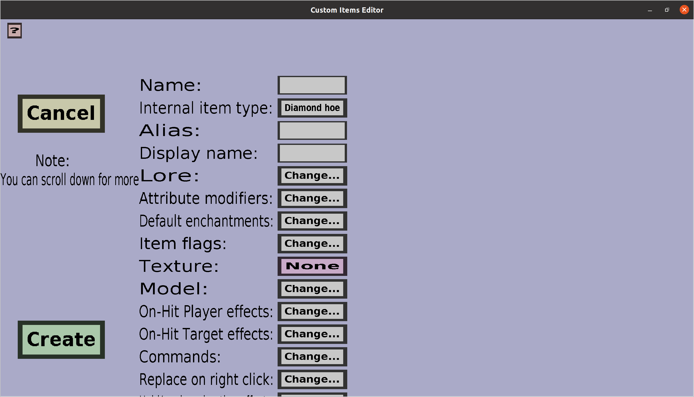

This page describes the shared properties of all custom item types. Every custom item that can be made will have the properties that are explained here. Contrary to most other pages in the documentation, there is no direct menu for this page itself. The image below shows how this menu would probably look like if it would exist:
This 'menu' contains a 'Cancel' button and an 'Apply' or 'Create' button. When creating a new item, it will be a 'Create' button. When editing an existing item, it will be an 'Apply' button.
Clicking the 'Cancel' button when creating a new custom item will bring you back to the item overview without adding the item in progress. Clicking the 'Cancel' button when editing an existing custom item will discard all changes made to that item and bring you back to the item overview.
Clicking the 'Apply' button will run a lot of validation checks to make sure everything is ok. If so, it will apply all changes made and then bring you back to the item overview. Clicking the 'Create' button will run similar validation checks. If everything is alright, the new custom item will be added to the item set and you will then be brought back to the item overview.
The rest of the buttons and labels on this menu is dedicated to the properties of the custom item that is being modified. Although there are a lot of properties, the only two properties that you have to choose when creating a new item are the Name and Texture: all other properties are either not required or will have a valid default value.
The unique name of the custom item: no two custom items in the same item set can have the same name. The name will be used as filenames in the resourcepacks the editor will generate and the name can be used in the /customitems give command. Note that the name of the custom item is not its display name: there is another field for that. Players will normally not see the names of custom items (unless they open up the server resourcepack with some archive manager). Currently, the rules for valid names are very strict: only characters in the alphabet, numbers, and underscores are allowed.
Because of internal reasons, renaming items is impossible once they have been created. Also, once an item has been deleted, no new item with its name can be created.
The vanilla item type of the custom item that will be used in the plug-in. The button on the right of 'Internal item type:' will display the currently chosen item type. Clicking on that button will allow you to choose another one, but which ones you can choose depends on the custom item type of the item you are editing/creating. For instance, simple custom items can choose between hoes and shears while custom bows have no choise but to use a bow. Most of the properties of the custom item can be overruled with for instance attribute modifiers, but the following properties are still determined by the internal item type:
This is NOT the attack damage of the custom item (that can be done with attribute modifiers). Instead, it's some internal value needed for the resoucepack. All you need to know is that no two custom items are allowed to have both the same internal item type and internal item damage. Modern versions of the editor will automatically assign correct values to this, so users no longer need to worry about it. Click here to show/hide detailed information about the internal item damage.
Minecraft introduced resourcepack predicates in version 1.9. These allow resourcepacks to give tools different textures based on the durability they have lost and whether or not the tool is unbreakable. Custom items will always be 'Unbreakable' (not to be confused with the unbreaking enchantment) tools that have lost durability. The internal item damage is the amount of durability the tool is 'missing'.
Since unbreakable tools can't be obtained legitimately in minecraft, they are nice to use as custom items. However, since unbreakable tools could also have different purposes on some servers , this plug-in will only claim textures of those unbreakable tools that also lost durability (unbreakable tools can't lose durability). I can't imagine any situation in which a server would need unbreakable tools with missing durability (except this plug-in of course), so I consider these tools safe to claim for my plug-in.
The resourcepacks generated by the editor will make sure that unbreakable tools that miss durability will get the textures of the right custom items. The plug-in has, just like other plug-ins, the power to bypass some minecraft rules. In this case, it has the power to forge unbreakable items that miss durability, which will thus take the custom texture.
The display name of the custom item. Unlike the name of the custom item, the display name is actually shown to players in-game and has almost no naming restrictions: it is allowed to have basically any character you can get inserted into its edit field. You can use the &-character for color codes; they will automatically be replaced with the real color character that is somewhat annoying to insert.
The item lore that will be given to the custom item in-game. Clicking on the 'Change...' button on the right of the 'Lore:' will bring you to a text list edit menu where you will be able to type the lines of lore. You can use color codes in lines of lore. To do so, you need to type either the '&'-character or the real color code character. Upon clicking on 'Apply', any & will be replaced by the color character.
Attribute modifiers are the right way to configure the attack damage of custom swords and the armor of custom armor pieces. They can also be used for a lot of other stuff. For those who are already familiar with attribute modifiers, this should be quite straightforward. For those who aren't, attribute modifiers can be used to change attack damage, attack speed, movement speed, max health and some other attributes of players when they have a certain item equipped in the right slot (for instance main hand or helmet).
To change the attribute modifiers this custom item will get in-game, click on the 'Change...' button on the right of 'Attribute modifiers:'. That should bring you to the attribute modifier edit menu.
Default enchantments are the enchantments custom items will automatically get whenever they are created (or dropped). Note that giving any default enchantments to custom items will prevent them from being enchanted in an enchanting table because it's not possible to enchant items that are already enchanted. To change the default enchantments of the custom item, click on the 'Change...' button on the right of 'Default enchantments:'. Doing that should bring you to the default enchantment edit menu where you can change them.
Item flags can be used to hide some properties of (custom) items like attributes or enchantments. To change the item flags of custom items in-game, click on the 'Change...' button on the right of 'Item flags:'. That will bring you to the item flag selection menu where you can choose which item flags you wan't and don't wan't.
The texture is probably the reason you are using this plug-in. It allows you to select the image of the custom item in-game. To select (or change) the texture, click on the button on the right of 'Texture:', which will bring you to the texture selection menu where you can select a texture you loaded.
The model allows you to assign a custom item model file to the custom item. This is a somewhat advanced resourcepack feature of minecraft, but those who are already familiar with creating resourcepacks will probably know what they are. For those who do not know what they are, it's probably better to ignore this. Clicking on the 'Change...' button on the right of 'Model:' will bring you to the model edit menu where you can choose a model.
Whenever someone (the target) is being hit with a custom item, all on-hit target (potion) effects of the custom item will be given to the target. Also, all on-hit player (potion) effects will be given to the one who hit the target. I called it on-hit player effects because the attacker will usually be a player, but note that it will work just as well when a monster is using a custom item as weapon. To change the on-hit player effects or on-hit target effects, click on the corresponding 'Change...' button, which should bring you to the right potion effect overview.
The 'commands' of a custom item is a list of commands that players will 'execute' when they right-click with the custom item in hand. Note that the commands will be executed by the player with the permissions of that player. It is the responsibility of admins to make sure that the players who can obtain the custom item actually have the right permissions to use its commands. This feature is primarily designed for interaction with other plug-ins (you can let players execute commands from other plug-ins). To change the commands of the custom item, click on the 'Change...' button on the right of 'Commands:'. That should bring you to the text list edit menu where you will be able to type the commands. The commands 'above' will be executed before the commands 'below'.
The drawback of this feature is that nothing prevents players from executing the commands of this custom item without actually holding the custom item, so this feature turned out to not be as useful as I was hoping when I made it. I'm planning to improve this feature someday but I don't know when. I will make sure that everything that works before those improvements will continue to work after the improvements, so you can safely use this feature if you find a good use case.